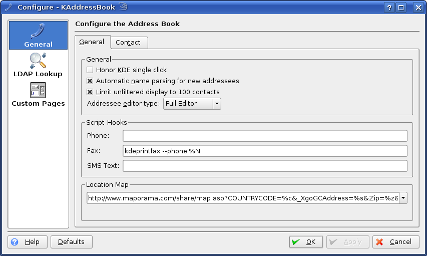
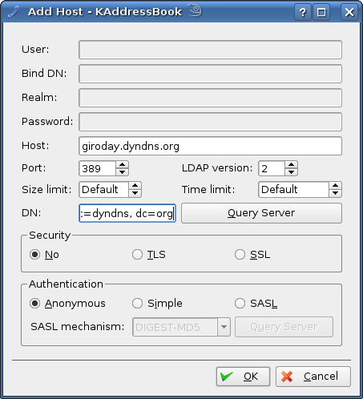

You can modify many aspects of KAddressBook's behavior in the preferences dialog; the dialog can be opened via -> or using the toolbar icon.

The preferences dialog.
- Honor KDE single click
If checked, KAddressBook pays attention to the KDE single-click option.
- Automatic Name Parsing for new addresses
If checked, the automatic name parsing feature is used for new addresses.
- Limit unfiltered display to 100 contacts
If checked, KAddressBook will only display 100 contacts in the contact list, when no filter is applied.
- Addressee editor type
You can either select the "Simple Editor" or the "Full Editor".
The Simple editor mode only lets you enter the name (which will be automatically parsed, if enabled) and an email address.
- Script Hooks
Here you can specify commands which are to be executed whenever you click at a (mobile) phone number or fax number or SMS link in the details page.
KAddressBook can automatically parse a name into its parts; to make sure this works in many cases you can add, here, additional name parts, like prefixes, suffixes and inclusions.
- Prefixes
Here you can manage name prefixes, like 'Prof.' or 'Dr.'.
- Inclusions
Here you can manage name inclusions, like 'van' or 'von', which are often part of Dutch or German names.
- Suffixes
Here you can manage name suffixes like 'Sr.' or 'Jr.'.
- Default Formatted Name
Here you can select the default type of formatted names to be used for new contacts.
On this page you can configure the LDAP servers that should be used for ldap queries in KAddressBook.
Use to add and setup a new server.

The Add Host dialog - Example of LDAP Lookup configuration.
Please notice that some of the fields might be disabled, depending on your selections.
You can include and exclude servers from the search by selecting or deselecting their check boxes in the server list. Press to close the dialog.
You may configure the search order by moving the servers up or down in the list. This can be done using the arrows on the right side of the dialog.
This section allows you to add your own GUI elements ('Widgets') to store your own values into KAddressBook. Proceed as described below:
| 1. Click on .(note: Qt™ Designer has to be installed, otherwise the button is disabled) |
| 2. In the dialog, select Widget, then click . |
| 3. Add your widgets to the form. |
| 4. Save the file in the folder proposed by Qt™ Designer |
| 5. Close Qt™ Designer |
In case you already have a designer file (*.ui) located somewhere on your hard disk, simply choose
IMPORTANT: The name of each input widget you place within the form must start with 'X_'; so if you want the widget to correspond to your custom entry 'X-Foo', set the widget's name property to 'X_Foo'.
IMPORTANT: The widget will edit custom fields with an application name of KAddressBook. To change the application name to be edited, set the widget name in Qt™ Designer.